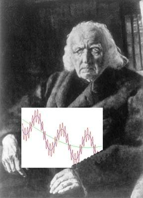

|

|
Description and goals:
A closer, more rigorous look at the fundamental concepts of one-variable calculus. The main focus will be on the structure of real numbers and the key notions of convergence and continuity; the basic facts about differentiation and integration will be presented as illustrations of how these notions are used. The course provides a good opportunity for students to learn how to read and write rigorous proofs, and prepares them for further studies in analysis and topology.
The course is intended for motivated students, especially math majors, who have a solid background in calculus. An essential prerequisite for this course is the intellectual curiosity to learn about a nice piece of mathematics and the willingness to think.
Picture: Who is this guy and what is the image he is holding?
(Hint: He is not Frankenstein.)
|
|
My webpage: Saeed Zakeri
My email:
Announcements:
- 9/30: Here is the first midterm review sheet containing a few practice problems. I'll discuss these problems during the review session on 10/7, but make sure you think about them ahead of time.
General Information and Ground Rules:
- Class lecture meetings are Tuesdays and Thursdays 11:00AM - 12:50PM in Kiely 320.
- Practice problems are posted roughly every week. You're supposed to work on them diligently before the solutions are posted. Your work on these problems won't be collected, but you should take this component of the course seriously as it directly impacts your understanding of the material.
- Quizzes will be given on the dates designated in the course syllabus. They will be very short (1 or 2 little problems, 10-15 minutes) and based on the latest practice problems.
- The exams are scheduled as follows:
| Midterm 1 | Midterm 2 | Final
|
Thursday October 9
(in class) | Thursday November 13
(in class) |
TBA
|
- Course grade is based on the following scheme:
| Quizzes | Two Midterms |
Final Exam
|
| 10% | 25% each | 40%
|
Please take note of the following important rules:
- The prerequisite for this course is MATH 201. If you have not successfully passed it, you should not
be enrolled in this class. Please contact the Math Department office and seek advice.
- If a midterm exam is missed because of a documented illness or valid emergency, the course grade will be determined on the basis of the other work done during the semester. Exams missed for other reasons will count as failures. In any case, there will be no makeup exam.
- At the end of the semester, everyone who has not withdrawn from the class will receive a grade. Incompletes will
not be given to avoid F's.
|